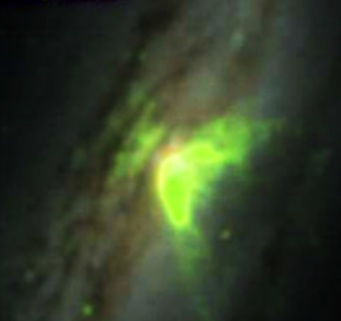
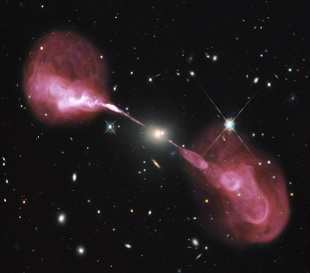
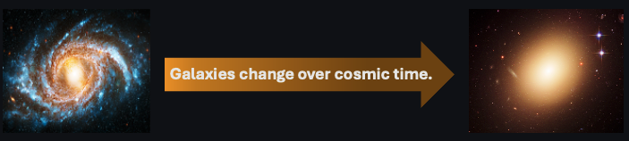
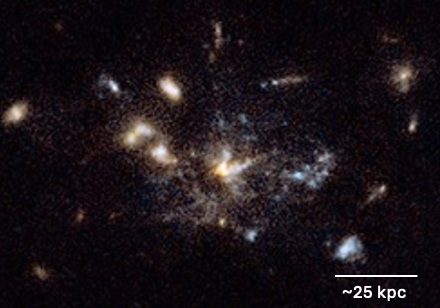
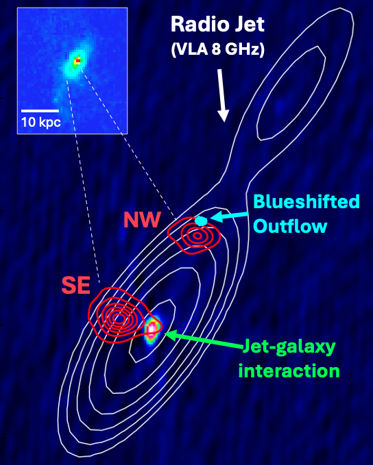
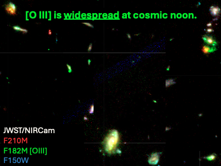
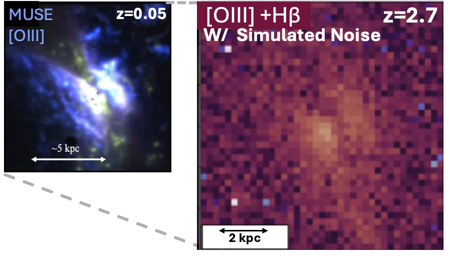
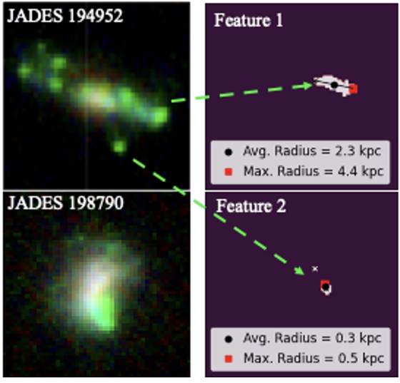
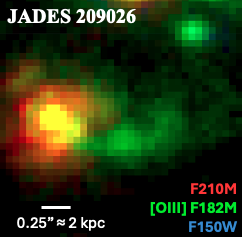

Black Holes and Galaxy Evolution
Nearly every massive galaxy hosts a supermassive black hole at its center. When these black holes actively accrete surrounding material, they become active galactic nuclei (AGN), releasing enormous amounts of energy that can impact their host galaxies and extend far beyond their visible boundaries. This energy can take several forms:

Radiation from the hot accretion disk surrounding the black hole can illuminate vast regions of gas, sometimes producing giant structures known as ionization cones. Image credit: Juneau et al. (2022), MUSE image of NGC 7582.
In other cases, AGN launch powerful, relativistic jets that extend far beyond the visible galaxy, known as radio jets. HST+VLA image of radio jets of Hercules A.

These different forms of black hole activity can heat or expel the gas needed to form new stars, potentially shutting down star formation. Under certain conditions, however, they may also trigger the formation of new stars. By regulating star formation, AGN are thought to play a fundamental role in driving the observed evolution from actively star-forming galaxies in the early universe to red, quiescent galaxies at later cosmic epochs.

My research focuses on understanding this energetic connection between AGN and their host galaxies during cosmic noon, a period roughly 10–11 billion years ago when galaxies were rapidly forming stars and their central black holes were growing most actively. By combining observations across the electromagnetic spectrum, I investigate how black hole activity shapes the multiphase gas reservoirs within and surrounding galaxies to uncover the role of AGN in driving galaxy evolution.
High-Redshift Radio Galaxies: Laboratories for Galaxy Evolution
High-redshift radio galaxies are powerful laboratories for studying the formation and evolution of today's most massive galaxies. These systems host powerful radio jets and are often found in dense environments with many interacting galaxies, abundant reservoirs of gas, and intense star formation.
The Spiderweb Galaxy
The Spiderweb Galaxy (z ≈ 2.2), corresponding to roughly 3 billion years after the Big Bang, is a particularly fascinating example. Previous observations with the Hubble Space Telescope and the Atacama Large Millimeter Array have revealed evidence of in situ star formation occuring between galaxies in the Spiderweb's extended gaseous resevoirs, or circumgalactic medium (CGM). By combining observations from the Mid-Infrared Instrument (MIRI) aboard the James Webb Space Telescope with ALMA observations, I am investigating whether warm molecular hydrogen (H₂) provides a dominant cooling channel for the CGM to form stars by radiating away mechanical energy.

The Dragonfly Galaxy: An Impostor Radio Galaxy
The Dragonfly Galaxy is another powerful high-redshift radio galaxy that illustrates the complex interactions between radio jets and their gaseous environments. Combining VLA, ALMA, and Keck observations, I identified evidence for a blueshifted outflow aligned with the fainter northern jet in the northwest galaxy, implying that the brighter southern jet was receding. Since the southern jet’s luminosity could not be explained by Doppler boosting, its interaction with the gaseous disk of the southeast galaxy likely contributed to the system’s enhanced radio brightness, earning the Dragonfly its epithet as an impostor radio galaxy.
Related publication: Lebowitz et al. (2023), ApJ

Mapping AGN Ionization at Cosmic Noon
Much of what we know about how supermassive black holes affect their host galaxies at cosmic noon comes from studies of rare, extremely luminous AGN known as quasars. During my Ph.D., I shifted the focus to the more numerous, moderate-luminosity AGN to investigate how more typical black holes influence their host galaxies. Their intense ionizing radiation can illuminate vast regions of gas, producing extended [O III] emission across a variety of morphologies, including more compact, knot-like emission, and other times appearing in striking conical structures.
The James Webb Space Telescope (JWST) has opened a new window into this population, revealing extended [O III] structures (shown in green) across galaxies at cosmic noon. These structures provide a distinct spatial fingerprint of supermassive black holes interacting with their surrounding gaseous environments, allowing investigations of AGN ionization for large samples of distant galaxies.

Simulations

I set out to search for ionization cones at cosmic noon and measure how far AGN radiation reaches into their host galaxies. However, at such great distances, even large structures can be hard to detect. I developed simulations to model how nearby ionization cones would appear in JWST observations of the distant universe, revealing how cosmological dimming and instrumental noise can cause us to underestimate their true sizes.
Related publication: Lebowitz et al. (2025), ApJ
Observations
I conducted the first statistical study of [O III] extents among AGN at cosmic noon, developing custom techniques to map ionized gas using JWST's Near-Infrared Camera (NIRCam). I discovered ionization cones in a dozen new AGN and placed the first constraints on how [O III] nebular extent scales with AGN luminosity at z ≈ 3. Taking advantage of the wealth of new [O III] imaging, I analyzed over 200 galaxies to reveal that AGN exhibit systematically larger [O III] regions compared to galaxies without identified AGN, showing that even more typical, moderate-luminosity AGN can still influence gas on galactic scales.
Related publication: Lebowitz et al. (2026), ApJ

Ongoing Research: Can radio jets operate alongside AGN ionization at cosmic noon?
High-redshift radio galaxies teach us that powerful radio jets can dramatically reshape their host galaxies, but could much weaker jets still have an influence? My recent JWST observations revealed a clue: at least one third of [O III]-emitting AGN are radio-detected and they appear to have more extended regions of ionized gas. By combining NIRCam and VLA observations, I am exploring whether these AGN host lower-power radio jets that might work alongside radiation to shape the interstellar gas and ultimately regulate star formation.
